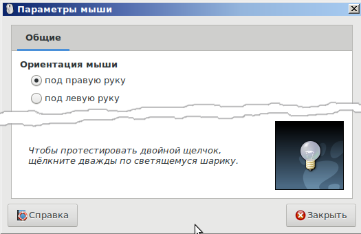
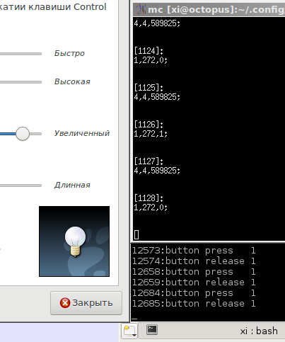

Чтобы понять, что происходит, надо выяснить, на каком уровне возникает проблема. Уровни можно условно разделить вот так:
1. Проблемы в мышке (аппаратно)
2. Проблемы в USB-контроллере материнки (аппаратно)
3. Проблемы в ядре Linux
4. Проблемы в подсистеме отлова событий устройств X11
5. Проблемы в Desktop Enviroment
Пойдем от верхнего уровня абстрации к нижнему.
Уровень 5
Если проблема в DE, то можно установить другое DE. Если проблема сохранится, значит первопричина глубже. У автора эта проблема возникла на новом компьютере в среде KDE5. Но в окружении MATE клики мышкой все равно терялись.
Уровень 4
Для диагностики можно установить программу xinput. Ее можно запустить от обычного пользователя. Данная программа сыпет в консоль коды событий устройств ввода. Чтобы видеть только события кликов мышкой, плюс добавить нумерацию событий (чтобы в длинном листинге отличать каждое событие), можно воспользоваться следующими командами.
Выяснить номер устройства мышки:
$ xinput
⎡ Virtual core pointer id=2 [master pointer (3)]
⎜ ↳ Virtual core XTEST pointer id=4 [slave pointer (2)]
⎜ ↳ USB OPTICAL MOUSE id=10 [slave pointer (2)]
⎜ ↳ SIGMACHIP USB Keyboard id=12 [slave pointer (2)]
⎣ Virtual core keyboard id=3 [master keyboard (2)]
↳ Virtual core XTEST keyboard id=5 [slave keyboard (3)]
↳ Power Button id=6 [slave keyboard (3)]
↳ Power Button id=7 [slave keyboard (3)]
↳ Sleep Button id=8 [slave keyboard (3)]
↳ Logitech Logitech USB Headset id=9 [slave keyboard (3)]
↳ SIGMACHIP USB Keyboard id=11 [slave keyboard (3)]
↳ SIGMACHIP USB Keyboard id=13 [slave keyboard (3)]
Запустить отображение событий мышки с нумерацией и фильтрацией по кликам:
$ xinput test 10 | grep -n button
29:button press 1
30:button release 1
49:button press 1
50:button release 1
62:button press 1
63:button release 1
73:button press 1
79:button release 1
100:button press 1
101:button release 1
Для визуализации того факта, что сама DE увидела событие (то есть сравнить события на 4-м и на 5-м уровне), можно воспользоваться тестовым окном в настройках мышки. В MATE в этом окне есть лампочка, которая загорается при одинарном клике, и ярко включается при двойном клике:

В других DE тоже есть нечто подобное. Далее надо разместить консольный вывод и лампочку как можно ближе друг к другу и можно начать кликать по картинке с лампочкой. Лучше снимать это дело на видео. Если событие отобразилось, а лампочка не загорелась, значит проблема где-то в глубинах DE, а сервер X11 работает исправно.
Если же при клике мышкой возникает ситуация, что физический клик был, но событие X11 не появилось и лампочка не загорелась, то нужно спускаться на уровень ниже.
Уровень 3
Для отслеживания событий клика мышкой на уровне драйверов ядра, я ничего лучшего не придумал, чем воспользоваться низкоуровневым переключателем LoloSwitcher. У этого переключателя клавиатуры есть режим тестирования событий на устройствах ввода, вот им и можно воспользоваться.
Чтобы прописать правильный файл устройства мышки в конфиг LoloSwitcher, можно посмотреть файлы устройств в каталоге /dev/input/by-id:
$ cd /dev/input/by-id
$ ls -l
итого 0
lrwxrwxrwx 1 root root 9 ноя 13 14:47 usb-275d_USB_OPTICAL_MOUSE-event-mouse -> ../event1
lrwxrwxrwx 1 root root 9 ноя 13 14:47 usb-275d_USB_OPTICAL_MOUSE-mouse -> ../mouse0
lrwxrwxrwx 1 root root 9 ноя 13 14:47 usb-Logitech_Logitech_USB_Headset-event-if03 -> ../event0
lrwxrwxrwx 1 root root 9 ноя 13 14:47 usb-SIGMACHIP_USB_Keyboard-event-if01 -> ../event3
lrwxrwxrwx 1 root root 9 ноя 13 14:47 usb-SIGMACHIP_USB_Keyboard-event-kbd -> ../event2
В данном случае файл событий на устройстве ввода мышки - usb-275d_USB_OPTICAL_MOUSE-event-mouse. Его и нужно прописать в файле конфигурации LoloSwitcher /home/user/.config/loloswitcher/config.ini:
InputDevice=/dev/input/by-id/usb-275d_USB_OPTICAL_MOUSE-event-mouse
Опцию DeviceType надо оставить равной 0 (события клавиатуры и мышки генерируются в одинаковом формате), а значение EventFilter надо уставить вот таким:
EventFilter=^[14],[0-9]+,[0-9]+;$
Данный фильтр будет пропускать коды событий только начинающиеся на 1 или на 4, что соответствует различным событиям мышки как устройства.
Далее нужно запустить LoloSwitcher в режиме тестирования кодов событий:
$ /sbin/loloswitcher -t1
Event code test.
If you see typed symbols without codes, you should
configure parameter InputDevice in your config.ini file.
Note! This codes with previous filtration by EventFilter value: '^[14],[0-9]+,[0-9]+;$'
Type CTRL+C for exit.
[1]:
4,4,589825;
[2]:
1,272,1;
[3]:
4,4,589825;
[4]:
1,272,0;
Теперь можно разместить окно с выводом loloswitcher рядом с окном вывода xinput и рядом с окном с лампочкой.

При клике мышкой надо следить, что происходит (а лучше, повторюсь, записывать на видео). Если событие ядра произошло, а событие xinput нет, то дело где-то в глубинах X11.
Если же физический клик мышкой был, но не сгенерировалось даже событие ядра, то нужно проверять аппаратные уровни.
Уровни 2 и 1
Проверить уровень 2 (стек USB на материнке) очень проблематично, поэтому можно проверить уровень 1 (сама мышка), и методом исключения понять, на каком уровне идет сбой. Хотя, тут проблема может оказаться в частичной несовместимости USB-контроллера компьютера и самой мышки. И кто тут работает неправильно - выяснить очень сложно.
Саму мышку можно проверить единственным способом: заменить на другую мышку.
Способ перетыкания мышки в другой компьютер не всегда показательный: на другом компьютере проблемная мышка может работать четко. Это возникает из-за того, что тут важна совокупность устройств: USB-контроллер на материнке может криво работать с какой-то моделью мышки, но та же мышка может нормально работать с другим USB-контроллером.
Так произошло в моем случае: мышка нормально работала на двух ноутбуках и на компьютере товарища, при этом глючила на новом компьютере. Поэтому был сделан неправильный вывод о том, что проблема в новой материнке.
Зато когда была вставлена другая мышка, на ней пропадания кликов исчезли вообще.